11 Infiltration
11.1 Definitions
Hillel, Introduction to Environmental Soil Physics, figure 14.6 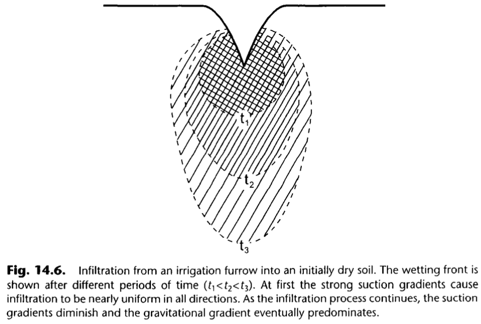
Dingman, figure 8.13 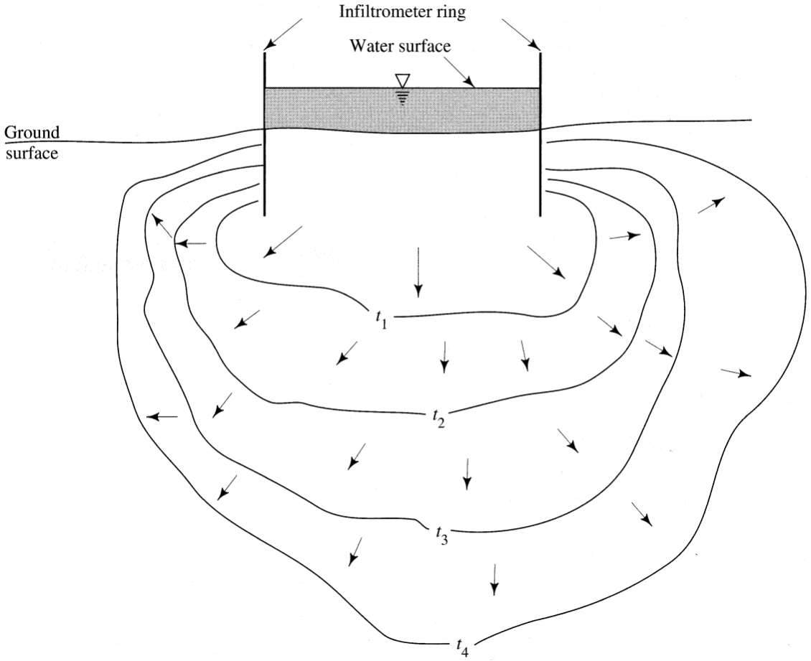
Dingman, figure 8.14 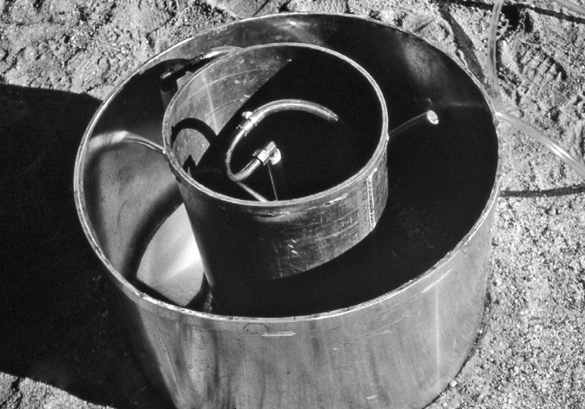
Hillel, Introduction to Soil Physics, figure 12.3 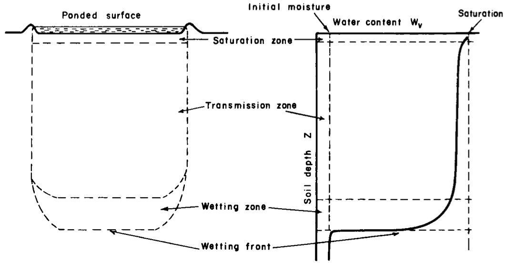
Source: Dingman, “Physical Hydrology”, 3rd edition, page 355
- The water-input rate, \(w(t)\) [L T\(^{-1}\)], is the rate at which water arrives at the surface due to rain, snowmelt, or irrigation. A water-input event begins at time \(t=0\) and ends at \(t=T_w\).
- The infiltration rate, \(f(t)\) [L T\(^{-1}\)], is the rate at which water enters the soil from the surface.
- The infiltrability, also called infiltration capacity, \(f^*(t)\) [L T\(^{-1}\)], is the maximum rate at which infiltration could occur at any time; note that this changes during the infiltration event.
- The depth of ponding, \(H(t)\) [L], is the depth of water standing on the surface.
Source: Ward & Trimble, “Environmantal Hydrology”, 2nd edition, page 63, 64
Infiltration capacity of absorbent paper is low, there is much runoff 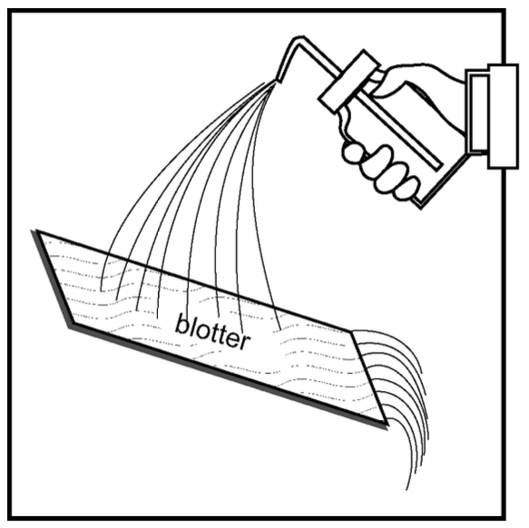
Infiltration capacity of sponge is high, there is little runoff 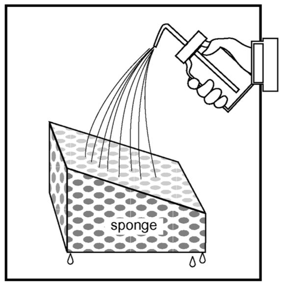
Infiltration capacity of the sponge is limited by the overlying layer with low permeability 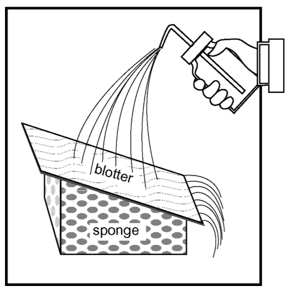
Infiltration capacity of the sponge is limited by the underlying layer 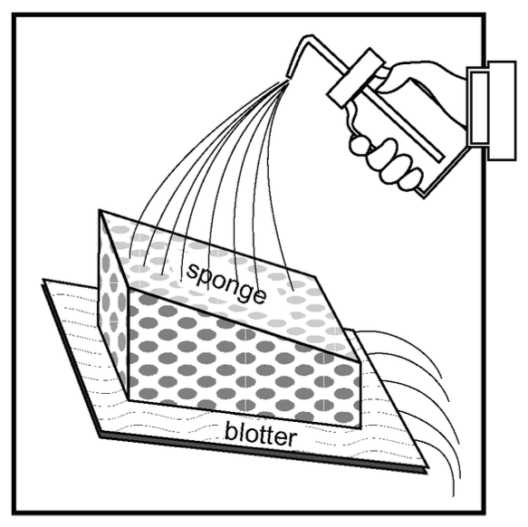
Ward & Trimble, “Environmantal Hydrology”, 2nd edition, page 65 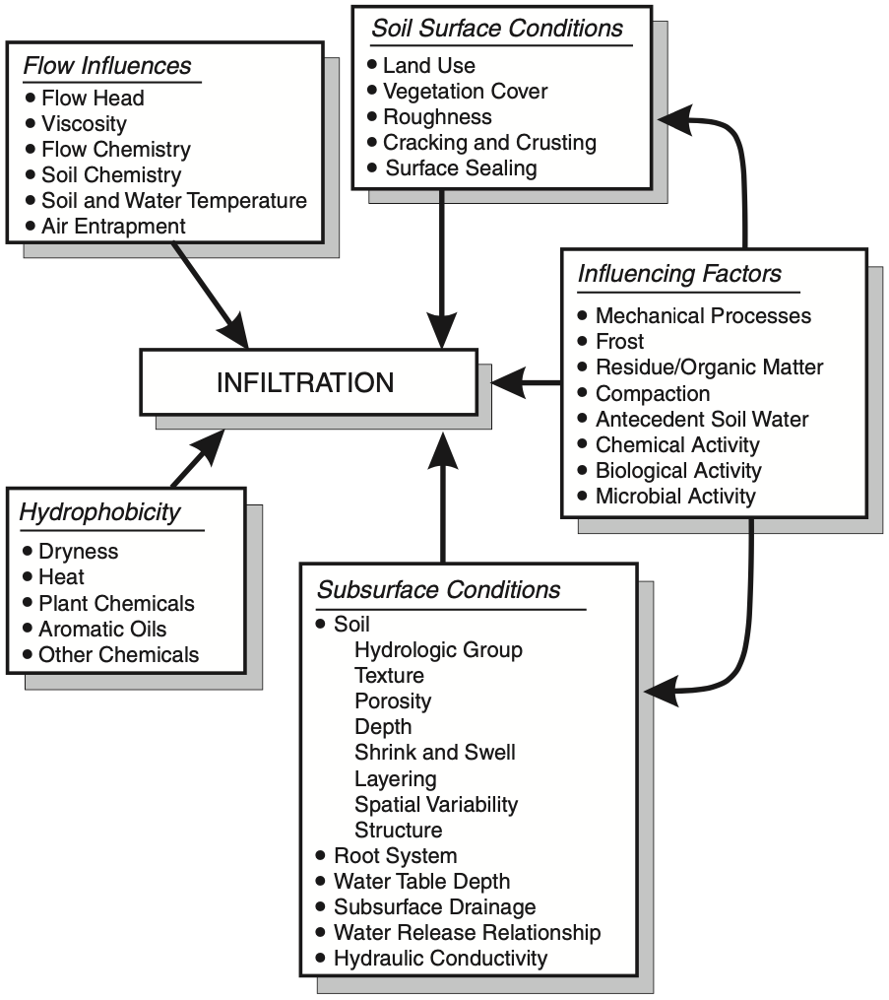
11.2 Darcy
Darcy’s equation for vertical flow \[ q = -K \frac{\partial H_\text{total}}{\partial z} \]
where the total head \(H_\text{total}=-H_\text{suction}-z_\text{depth}\), and
- \(H_\text{suction}\) is the suction head (negative pressure head)
- \(z_\text{depth}\) is the depth, points downward.
Substituting:
\[ q = K \frac{\partial H_\text{suction}}{\partial z} + K \]
Substituting the above into the continuity equation
\[ \frac{\partial \theta}{\partial t} = \frac{\partial q}{\partial z} \]
yields the Richards equation.
11.3 Richards
Richards equation:
\[ \frac{\partial \theta}{\partial t} = \frac{\partial}{\partial z} \left[ K(\theta) \frac{\partial H_\text{total}}{\partial z} \right] \]
Substituting \(H_\text{total}=-H_\text{suction}-z_\text{depth}\) yields:
\[ \frac{\partial \theta}{\partial t} = \frac{\partial}{\partial z} \left[ K(\theta) \left( \frac{\partial(-H_\text{suction} - z)}{\partial z} \right) \right] \]
\[ \frac{\partial \theta}{\partial t} = - \underbrace{ \frac{\partial}{\partial z} \left( K(\theta) \frac{\partial H_\text{suction}}{\partial z} \right) } _{\text{matric}} - \underbrace{ \frac{\partial K(\theta)}{\partial z} } _{\text{gravitational}} \]
11.3.1 short times
As the water starts to enter the relatively dry soil, the pressure differences in the water at the surface and in the soil are quite large and, as a result, the second term on the right is practically negligible compared to the first one.
\[ \frac{\partial \theta}{\partial t} = - \frac{\partial}{\partial z} \left( K(\theta) \frac{\partial H}{\partial z} \right) \]
11.3.2 long times
As illustrated in the figure below (Davidson et al., 1963), after longer times of infiltration, the water content profile near the surface gradually becomes more uniform and it eventually assumes the satiation value, or \(\theta\rightarrow \theta_0\); similarly, the pressure in the upper layers of the soil becomes gradually atmospheric, or \(H \rightarrow 0\). Hence, their vertical gradients
\[ \frac{\partial\theta}{\partial z} \text{ and } \frac{\partial H_\text{suction}}{\partial z} \longrightarrow 0 \]
From Darcy’s equation we have that
\[ q = K(\theta_0) = K_\text{sat} \]
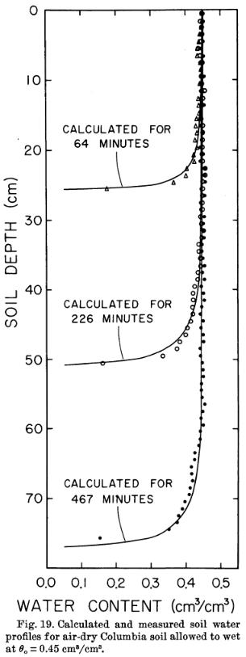
11.3.3 Rainfall infiltration
Infiltration rate is equal to rainfal rate, at least at first. If rainfall rate \(w\) is lower than \(K_\text{sat}\), than everything enters the soil, i.e., \(f=K_\text{sat}\). However, if \(w>K_\text{sat}\), water content \(\theta\) will increase at the surface, until it reaches \(\theta_0\), and at that moment, called ponding time \(t_p\), water will begin to accumulate at the surface.
Hillel, Introduction to Environmental Soil Physics, figure 12.1 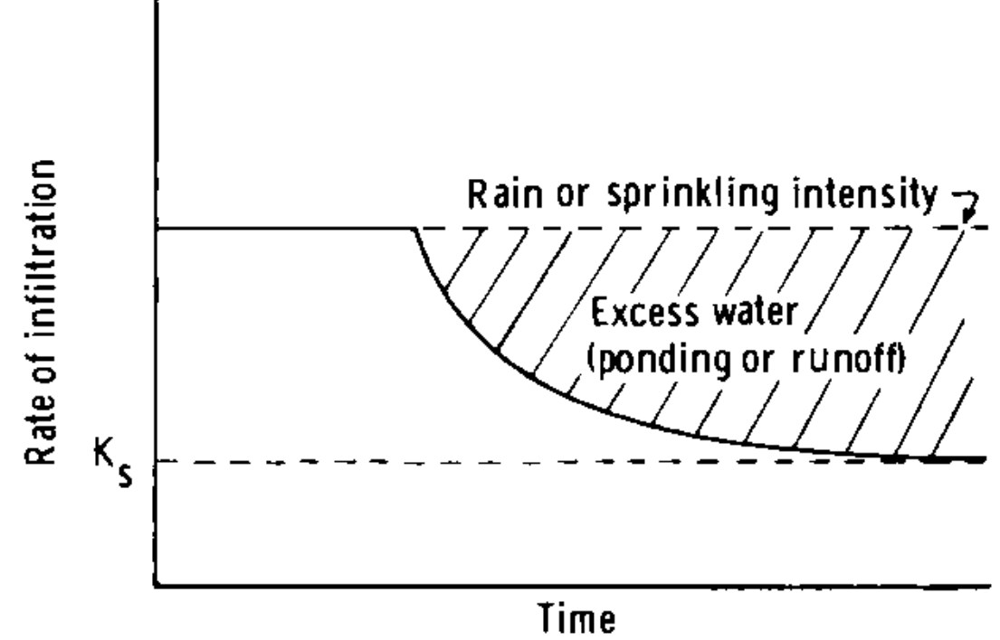
Hillel, Introduction to Environmental Soil Physics, figure 12.2 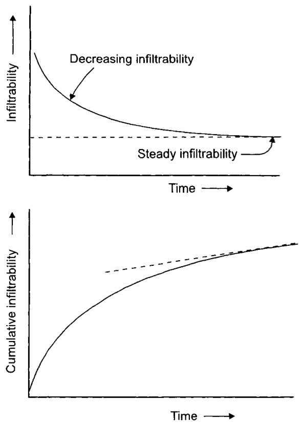
11.4 Horton equation
One of the most widely used models, developed by R.E. Horton (1939), considered to be the father of modern hydrology.
\[ f = f_c+(f_0-f_c)e^{-\beta t} \]
- \(f\): infiltration rate
- \(f_c\): infiltration capacity at large \(t\)
- \(f_0\): initial infiltration capacity
- \(\beta\): best fit empirical parameter
Advantages
- Simple equation
- Usually gives good fit to measured data because it is dependent on three parameters
Disadvantages
- This method has no physical significance, it is not based on any water transport mechanism
- Does not describe infiltration prior to ponding
11.5 Green & Ampt
Dingman, figure 8.11 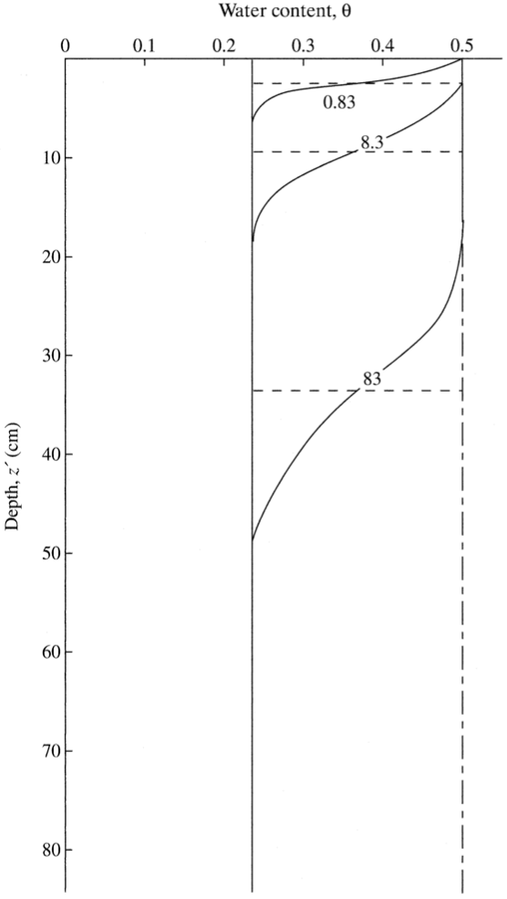
Assumptions:
- homogeneous soil, infinite depth (no water table)
- horizontal surface
- constant water head equal to zero is maintained at the surface
- uniform water content prior to wetting, \(\theta(t=0,z)=\theta_0\)
- moving front is characterized by a constant matric suction, \(\psi_f\)
Source: Dingman, page 370
This equation was developed under the scenario of constant rainfall or irrigation on an initially dry soil as a sharp wetting front (such as piston flow). Water penetrates a dry soil with a certain initial moisture content, and wets the layer to a saturated moisture content as it traverses deeper. The connection between soil moisture and infiltration rate is modeled in the Green-Ampt equation:
\[ f(t) = K_\text{sat} \left[ 1 + \frac{|\psi_f|\cdot \left( \phi - \theta_0 \right)}{F(t)} \right] \]
- \(f(t)\): infiltration rate
- \(F(t)\): cumulative infiltration rate, \(F=\int\! f \text{ d}t\)
- \(\psi_f\): effective wetting-front suction
- \(\phi\): soil porosity
- \(\theta_0\): initial soil water content
The same equation can be simply be rewritten as
\[f = \frac{A}{F} + B\]
where
- \(A = K_\text{sat}\cdot|\psi_f|\cdot \left( \phi - \theta_0 \right)\)
- \(B= K_\text{sat}\)
The porosity \(\phi\) and the saturated hydraulic conductivity \(K_\text{sat}\) can be estimated from the soil texture. The wetting-front suction \(\psi_f\) can be estimated using the Brooks-Corey parameters:
\[ |\psi_f| = \frac{2b+3}{2b+6}\cdot |\psi_{ae}|, \]
where \(\psi_{ae}\) is the air-entry pressure head. Values for the parameters above can be found in this table:
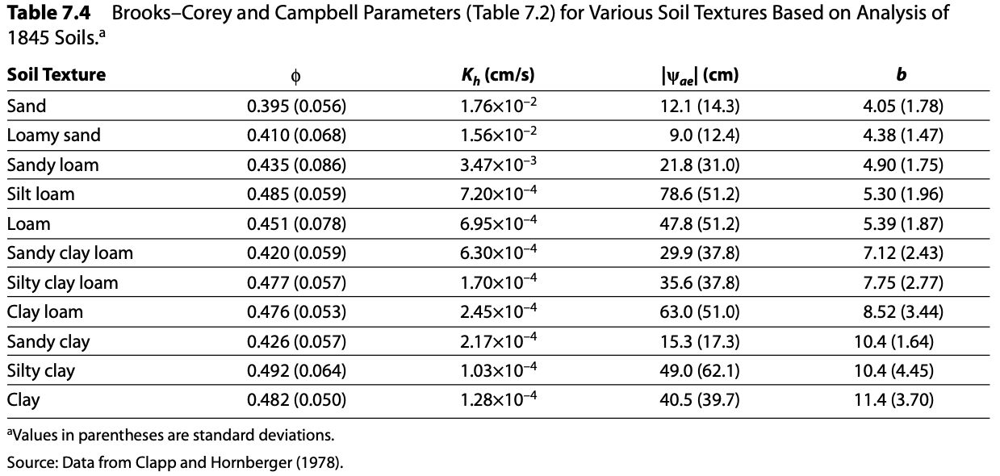
11.6 Best Fit, Least Squares Method